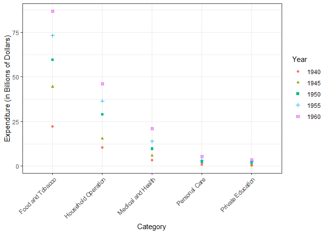

ggmatplot is a quick and easy way of plotting the columns of two matrices against each other. It is built upon ggplot2, and is aimed at providing a more direct approach to creating simple plots using matrices.
ggmatplot can also be considered as an alternative to pivoting data into long format for visualizing using ggplot2.
You can install the released version of ggmatplot from GitHub:
# install.packages("remotes")
remotes::install_github("xuan-liang/ggmatplot")
USPersonalExpenditure
#> 1940 1945 1950 1955 1960
#> Food and Tobacco 22.200 44.500 59.60 73.2 86.80
#> Household Operation 10.500 15.500 29.00 36.5 46.20
#> Medical and Health 3.530 5.760 9.71 14.0 21.10
#> Personal Care 1.040 1.980 2.45 3.4 5.40
#> Private Education 0.341 0.974 1.80 2.6 3.64
ggmatplot(
rownames(USPersonalExpenditure),
USPersonalExpenditure[, 1:5],
plot_type = "both",
xlab = "Category",
ylab = "Expenditure (in Billions of Dollars)",
legend_title = "Year",
legend_label = c(1940, 1945, 1950, 1955, 1960)
) +
theme_bw() +
theme(axis.text.x = element_text(angle = 45, hjust = 1))
#> Warning: Ignoring unknown parameters: plot_type